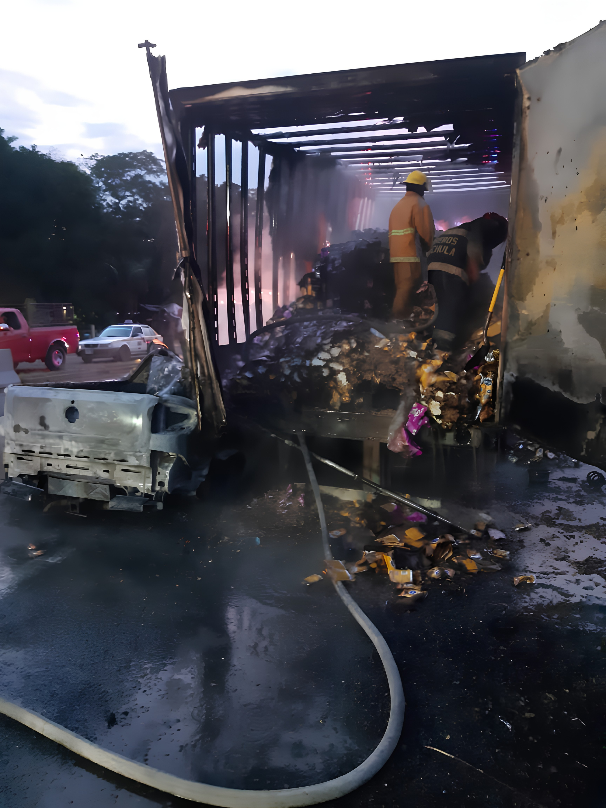
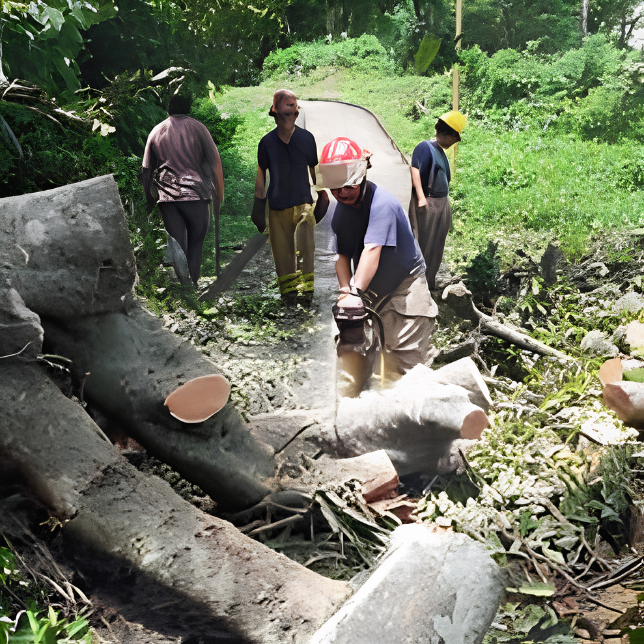
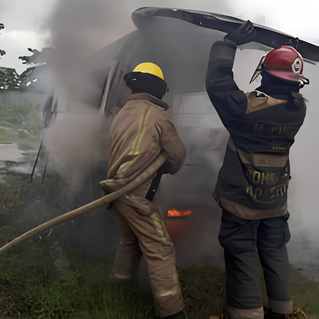
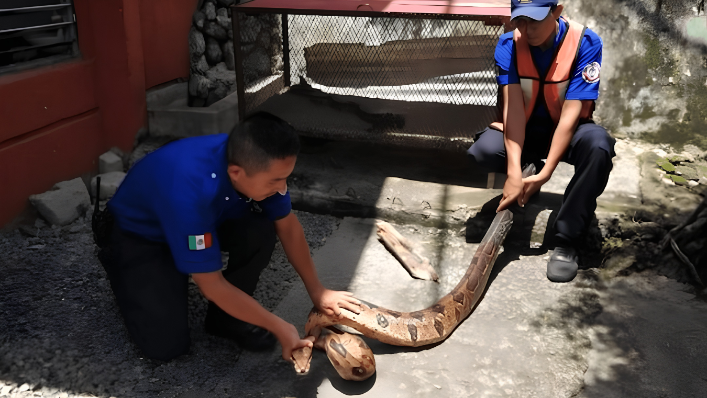
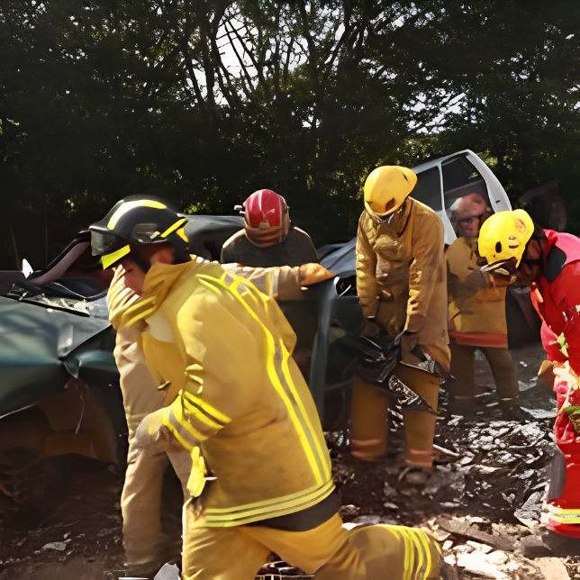
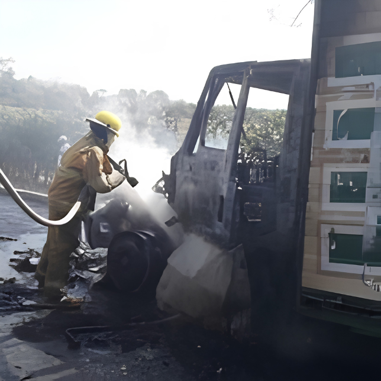
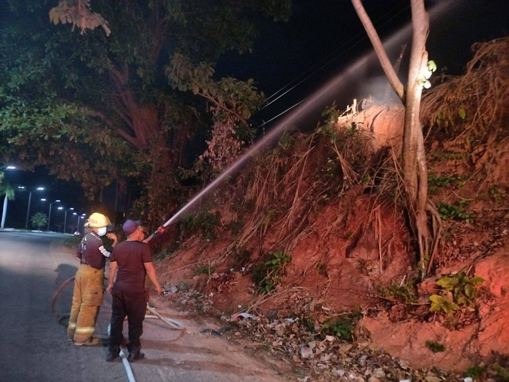
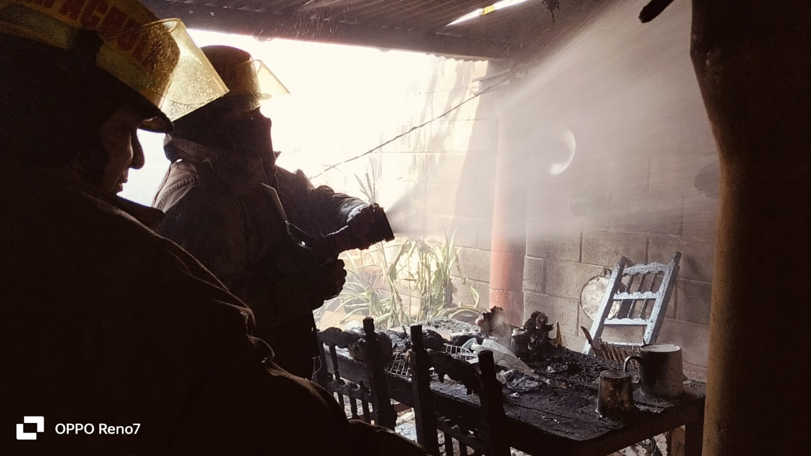
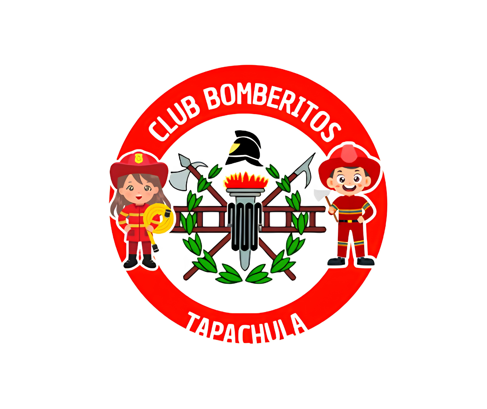

Comunidad
Comunidad
Desfile Expo Feria Tapachula 2026
Estuvimos presentes en este hermoso desfile y fue un honor convivir con cada una de las familias tapachultecas que presenciaban este magno evento.
Ver en Facebook
Protegiendo vidas y el patrimonio de nuestra comunidad.
Por el Honor de Servir.

El Heroico Cuerpo de Bomberos de Tapachula trabaja día a día para proteger a los habitantes de nuestra ciudad y sus alrededores. Con personal altamente capacitado y equipo moderno, respondemos ante cualquier emergencia con rapidez y profesionalismo.
Nuestro compromiso va más allá de apagar incendios: brindamos atención médica prehospitalaria, rescate técnico y educación preventiva para toda la comunidad, en corresponsabilidad con autoridades y ciudadanía.
Servicios que brinda el Heroico Cuerpo de Bomberos de Tapachula


El Heroico Cuerpo de Bomberos también atiende las siguientes incidencias:
Momentos que reflejan nuestro compromiso con Tapachula






El Heroico Cuerpo de Bomberos de Tapachula te invita a formar parte de nuestra familia. Aprende habilidades de rescate, primeros auxilios y contribuye al bienestar de tu comunidad.
Tu apoyo económico al Heroico Cuerpo de Bomberos de Tapachula nos permite mantener y reparar unidades, adquirir herramientas, combustible, material de curación y equipos necesarios para responder mejor ante emergencias.
Mantente informado sobre las actividades del Heroico Cuerpo de Bomberos de Tapachula
Comunidad
Estuvimos presentes en este hermoso desfile y fue un honor convivir con cada una de las familias tapachultecas que presenciaban este magno evento.
Ver en Facebook Prevención
Prevención
Compartimos tips de prevención y diversión con los pequeños implementando el programa #ClubBomberitos #BomberitoPorUnDia.
Ver en Facebook
EmergenciaEl reporte de un operador de taxi activó nuestro protocolo de respuesta. Llegamos rápidamente a sofocar el incendio.
Ver en Facebook
EmergenciaSe incendió una casa cerca de la Prepa No. 6. Trabajamos de manera coordinada para sofocar el incendio a tiempo.
Ver en FacebookMáxima autoridad operativa. Dirige y coordina todas las actividades del cuerpo de bomberos.
El corazón de la institución. Personal capacitado en todas las áreas de emergencia y respuesta.
Especialistas en atención prehospitalaria, estabilización y traslado de pacientes.
Equipo con entrenamiento especializado en técnicas de rescate técnico en diversas situaciones.
Únete al programa de Empresas Solidarias del Heroico Cuerpo de Bomberos de Tapachula y contribuye a fortalecer la capacidad de respuesta en la salvaguarda de vidas y bienes en nuestro municipio.
Tu empresa recibe pláticas y talleres para fortalecer sus protocolos de seguridad, brigadas internas y personal. Extensivo a sus familias.
Tu aportación mensual (monto voluntario) contribuye directamente a nuestra operación. Cada apoyo es respaldado con un recibo deducible de impuestos.
Nuestra visión es ser autosustentables en nuestras operaciones diarias de emergencia, consolidando alianzas con empresas comprometidas socialmente.
Comunícate con nosotros y forma parte de esta red de empresas comprometidas con la seguridad de Tapachula.

Un espacio creado especialmente para niñas y niños que sueñan con ser bomberos. A través de actividades dinámicas y educativas, los pequeños aprenden prevención de accidentes, primeros auxilios y conocen de cerca el equipo de emergencia.
Llama al 911 — disponible 24/7
(962) 625-2065 — información general
Octava Sur S/N, Los Naranjos, San Sebastián
30700 Tapachula de Córdova y Ordóñez, Chiapas
Lun – Vie: 8:00 AM – 6:00 PM
Sáb: 9:00 AM – 1:00 PM
Conoce qué hacer antes, durante y después de una emergencia
Ante cualquier emergencia, llama de inmediato al 911 o al (962) 625-2065. Estamos disponibles las 24 horas.
Titular: Patronato de Bomberos de Tapachula
Banco: Banorte
Número de cuenta: 0620 1174 12
CLABE interbancaria: 0721 3300 6201 7412 6
Gracias por tu generoso apoyo. Cada donativo contribuye a salvar vidas en Tapachula.Banco: Banorte
Número de cuenta: 0620 1174 12
Titular: Patronato de Bomberos de Tapachula
Acude a cualquier tienda OXXO, indica que es un depósito a Banorte y proporciona el número de cuenta.Visítanos en nuestras instalaciones y entrega tu donación directamente a nuestro personal.
Dirección: Octava Sur S/N, Los Naranjos, San Sebastián, Tapachula, Chis.
Horario: Lun–Vie 8:00–18:00 | Sáb 9:00–13:00
Gracias por tu generoso apoyo. Cada donativo contribuye a salvar vidas en Tapachula.Calcula cuánto tardarían los bomberos en llegar
Necesitamos acceder a tu ubicación para calcular la distancia y el tiempo estimado de llegada.
Obteniendo tu ubicación...
Este es un tiempo estimado. En caso de emergencia real llama al 911 de inmediato.
No pudimos obtener tu ubicación.